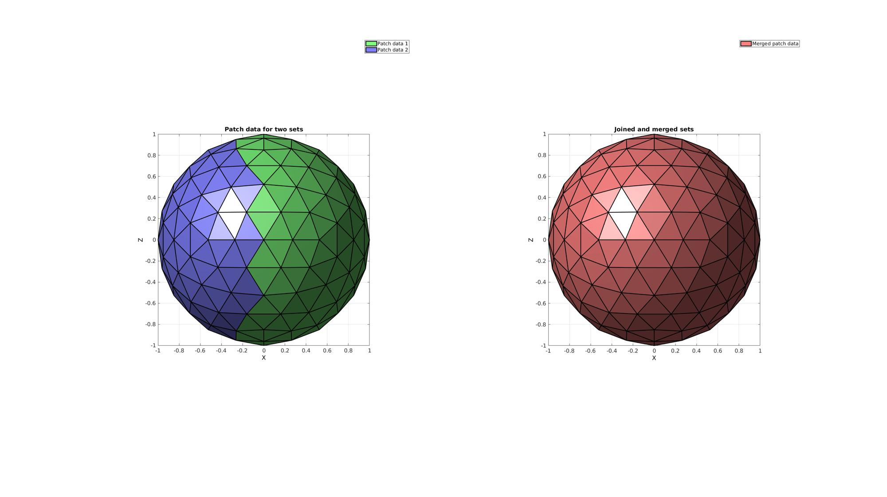
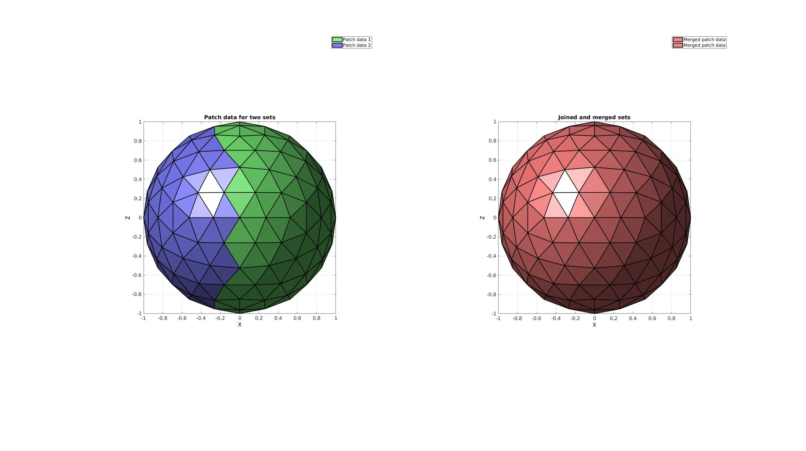

mergeVertices
Below is a demonstration of the features of the mergeVertices function
Contents
Syntax
[F,V,ind1,ind2]=mergeVertices(F,V,numDigitsMerge);
Description
Merges vertices that are deemed the in terms of a certain number of significant digits
Examples
clear; close all; clc;
Plot settings
fontSize=15; plotColor1=0.25.*ones(1,3); plotColor2=0.75.*ones(1,3); edgeWidth=2; markerSize=30;
Example 1: Merging vertices in patch data
Creating example patch data with unused nodes. This example is a sphere triangulation. The sphere is roughly cut in half by deleting half of its triangles. However, after the cut operation the nodes which used to be used by the deleted half are still present in the vertex array.
Defining geodesic dome triangulation
r=1; %sphere radius n=2; %Refinements [Fs,Vs]=geoSphere(n,r); %The sphere triangulation
Cropping away a selection of faces
logic1Vertices=Vs(:,1)>0; %Logic on vertices logic1=any(logic1Vertices(Fs),2); %Logic on faces
Removing unused nodes using patchCleanUnused
[F1,V1]=patchCleanUnused(Fs(logic1,:),Vs);
[F2,V2]=patchCleanUnused(Fs(~logic1,:),Vs);
% Joining node sets (without merging)
[F,V]=joinElementSets({F1,F2},{V1,V2});
Merging shared nodes using mergeVertices
size(V) [F,V]=mergeVertices(F,V); size(V)
ans = 184 3 ans = 162 3
Visualize results
cFigure; subplot(1,2,1); hold on; title('Patch data for two sets'); hp(1)=gpatch(F1,V1,'gw','k',1,edgeWidth); hp(2)=gpatch(F2,V2,'bw','k',1,edgeWidth); legend(hp,{'Patch data 1','Patch data 2'}); axisGeom(gca,fontSize); camlight headlight; view(0,0); ha=axis; subplot(1,2,2); hold on; title('Joined and merged sets'); clear hp; hp(1)=gpatch(F,V,'rw','k',1,edgeWidth); legend(hp,{'Merged patch data'}); axisGeom(gca,fontSize); camlight headlight; view(0,0); axis(ha); drawnow;
Example 2: Merging nodes on a cell array of meshes
F={F1,F2+size(V1,1)};
V=[V1;V2];
Merging shared nodes using mergeVertices
size(V) [F,V]=mergeVertices(F,V); size(V)
ans = 184 3 ans = 162 3
Visualize results
cFigure; subplot(1,2,1); hold on; title('Patch data for two sets'); hp(1)=gpatch(F1,V1,'gw','k',1,edgeWidth); hp(2)=gpatch(F2,V2,'bw','k',1,edgeWidth); legend(hp,{'Patch data 1','Patch data 2'}); axisGeom(gca,fontSize); camlight headlight; view(0,0); ha=axis; subplot(1,2,2); hold on; title('Joined and merged sets'); hp(1:2)=gpatch(F,V,'rw','k',1,edgeWidth); legend(hp,{'Merged patch data','Merged patch data'}); axisGeom(gca,fontSize); camlight headlight; view(0,0); axis(ha);

GIBBON www.gibboncode.org
Kevin Mattheus Moerman, gibbon.toolbox@gmail.com
GIBBON footer text
License: https://github.com/gibbonCode/GIBBON/blob/master/LICENSE
GIBBON: The Geometry and Image-based Bioengineering add-On. A toolbox for image segmentation, image-based modeling, meshing, and finite element analysis.
Copyright (C) 2019 Kevin Mattheus Moerman
This program is free software: you can redistribute it and/or modify it under the terms of the GNU General Public License as published by the Free Software Foundation, either version 3 of the License, or (at your option) any later version.
This program is distributed in the hope that it will be useful, but WITHOUT ANY WARRANTY; without even the implied warranty of MERCHANTABILITY or FITNESS FOR A PARTICULAR PURPOSE. See the GNU General Public License for more details.
You should have received a copy of the GNU General Public License along with this program. If not, see http://www.gnu.org/licenses/.